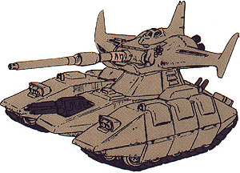

| Magella Attack Tank |
|
|  | |
General and Technical Data |
|
|
Unit Type: attack-use tank Armament: 175mm high-velocity cannon; 3-barrel 35mm machinegun; 2 x 6-barrel grenade launcher |
|
| Technical and Historical Notes | |
|
The Magella Attack Tank is one of the many unique Zeon machines that was brought down along with the Zaku in the opening stages of the war. Its unusual hull structure is only the first of many radical changes it has over the conventional tank. Its turret can actually detach from the main body and achieve flight for short periods of time, and it only requires a single crewman to operate.
The Magella Attack's single 175mm cannon is an extremely powerful APFSDS type (armor-piercing, fin-stabilized discarding sabot) type, and it can even penetrate the Federation's vaunted lunar titanium armor if it hits a flat surface from head-on. Its 35mm machinegun pod is intended for use against infantry, and it also equips a set of grenade launchers around the cockpit, usually armed as smoke dischargers. Like many quirky Zeon designs, the Magella Attack has its flaws. Its turret can only fly for a few minutes at a time, and its cannon is wildly inaccurate while airborne. As such, it is mostly intended for a pilot escape means, or to quickly gather reconnaissance over a terrain obstacle. A better machine for use against mobile suits than the Type 61, but ultimately not as useful as the mobile suits which it supports.
|
 RPG quick stats sheet
RPG quick stats sheet